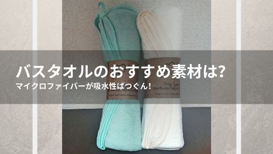
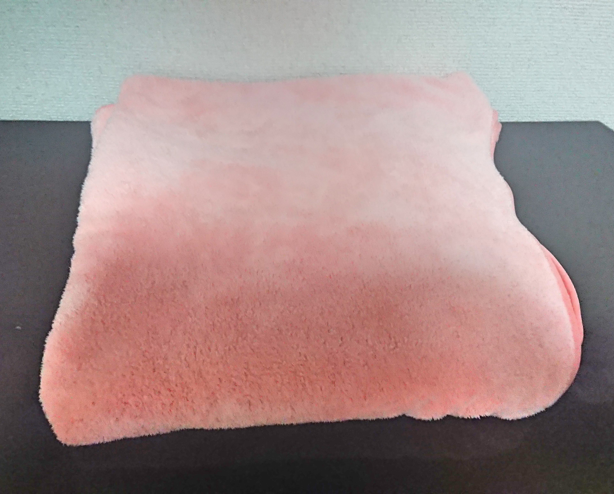

バスタオルのおすすめ素材は？マイクロファイバーが吸水性ばつぐん！
驚くほどの吸水性でした。
いい気持ちでお風呂から上がったら、そのままのいい気持ちでいたいですよね。
ふわふわな感触で拭いたところが一瞬で乾くバスタオルの素材があります。
それはマイクロファイバーを使ったバスタオルです。
風呂上がりに体を乾かすのを楽に時短したいと思って買ったマイクロファイバー素材のバスタオルですが、使い心地がよすぎてもう手放せないものとなってしまいました。
そんなマイクロファイバーを使ったバスタオルをご紹介したいと思います。
一瞬で体が乾く
タオルを当てた部分の水滴がみるみる吸い上げられていき、一瞬で乾いてしまいます。
拭くというよりも体に当てる使い方をします。
拭こうとすると素材が体にひっかかるので思うように滑らないです。
ほんの数秒押し当てると押し当てた周辺のは奇麗にかわいているので体全体を拭くのに時間がほとんどかかりません。
初めて使った時は拭かずに押し当てるのが慣れていなかったのですが、それでも普通のバスタオルを使っていた時に比べてかなり早く体を乾かすことができました。
また、髪に押し当てることで髪もかなり早く乾かすことができます。
これ本当にすごいです。髪の毛が多い私ですが、正直かなり乾くので、時間があるときはバスタオルで拭いた後はドライヤーを使わなくても自然乾燥まで持っていけます。
もちろん髪は体に比べて時間はかかりますし、完璧には乾かすことは無理です。
それでも、最終的に自然乾燥で乾かせるところまで持っていけるのはこの素材マイクロファイバーならではですね。
なんで一瞬で乾くのか？
マイクロファイバーという素材はナイロンやポリエステルが8マイクロメートル以下のものを使用しています。そのため極めて細い繊維となっており、吸水性と通気性がすごく高くなっています。
この素材はバスタオルだけでなく、卓上タオルや掃除用品などにも使用されているものがあり、掃除用品のマイクロファイバータオルも私は愛用しております。
また、体がすぐに乾くという特徴に加えて、タオル自体も通気性に優れているため乾くのが速いです。そのため洗濯後に干したり、数日使ったりされる方はこのタオル自体の乾くのが速い利点も嬉しいと思います。
ふわふわなさわり心地
このバスタオル。ふわっふわで気持ちがいいです。
ふわふわの理由はバスタオルの毛が長めなところにあります。
毛が長いので毛玉が出来たり、毛が落ちたりしないか心配かもしれません。
私は長くこのタオルを使っていますが、全く毛が落ちてきたりはしていません。
また、私はやりませんが風呂上がりにタオルを床にひいておいて飛び込む使い方をされている方がいるそうです。
この使い方をされている方もマイクロファイバー素材のバスタオルには大満足みたいですよ。
バスタオル自体ふわふわなものも多いのでこのタオルだからというメリットではありませんが、ふわふわじゃないと嫌だという気持ちもわかるのでふわふわだということも書いておきますね。
このさわり心地なので、赤ちゃんや肌が敏感肌な方にもおすすめです。
洗濯してもふわふわで色落ちしない
洗濯すると他のタオルでもそうですが、ごわごわになってしまいますよね。
このバスタオルも自然乾燥させると少しごわごわになってしまうことはあるのですが、乾燥機を使ってあげるとふわふわのふかふかに元通りです。
また、洗濯で色が落ちないので洗濯はどんどんしても問題ないです。
バスタオルの中には色落ちするものもあるのでこれは安心ですね。

その他の小さないいところ
フック付きで引っかけるところがあれば、引っかけておくことができます。
プールやジムに行かれて使いたいという方にはありがたいですよね。
使った人のレビュー
実際に使った人のレビューです。悪いレビューは使い方に関するものがありますね。
引用元：Amazonレビュー
”1ヶ月前に買って毎日使っています。4枚入ってるのでこちらを買えばほかのバスタオルは買わなくても十分です。
毎回普通の洗剤で洗濯をしていて、1ヶ月以上経った今でもフワフワしていて吸水性も高いままで耐久性に驚きました。
この今の寒い時期、お風呂から出ても大きさも十分で肌触りも良く、気持ちよく身体を拭くことができます。
でも速乾性があり、毎日洗ってもしっかり乾くので清潔に毎日ヘビロテできます。
今まで使っていた洗濯する度に固くなってしまうタオルとは性質が全然違い、買って良かったです！”
”通常バスタオルの使用としてはゴシゴシふき取る使い方をする方がほとんどだと思いますが マイクロファイバータオルは
濡れた肌では絶望的に滑らないです。 包み込む用にポンポンと使用する方にはいいかもしれませんが、、、
個人的にはバスタオルとして使用しないので 敷物や掛物として有用に使用しています。”
まとめ
個人的な意見ですがこのバスタオルに出会えてよかった。そんなバスタオルです。
他の人のレビューを見ていても使い方が慣れないというレビューもありましたが、ほとんどの方が良い評価をしておられました。
もう元の素材のバスタオルには私は戻りませんが、これよりいい物がでれば使ってみたいですね。
余談ですが、このバスタオルと併用して珪藻土バスマットを使うことでより一層乾かすのが速くなるのでそちらも試してしてみてください。
珪藻土バスマットもレビューしてます。